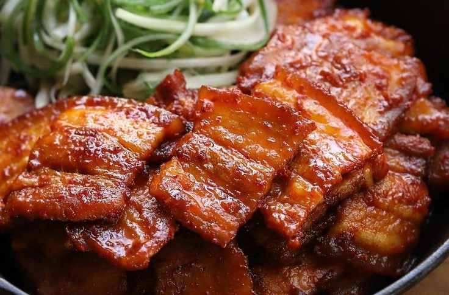

고추장삼겹살은 한국의 전통요리 중 하나로, 고추장,
설탕, 간장 등을 섞어 만든 소스를 사용하는 것이 특징입니다. 이에 따라
매콤하면서도 달콤한 맛과 함께 부드러운 육질이 일품입니다. 또한,
삼겹살은 돼지고기 중에서도 가장 부드럽고 지방이 많아 맛이 좋은
부위로 유명합니다. 그리고 이 삼겹살을 고추장소스에 재워 구워내면,
고기의 맛과 소스의 맛이 조화롭게 어우러져 맛있는 요리가 완성됩니다.
👉 재료
• 삼겹살 300g
• 양파 1/2개
• 고추 4개
• 대파 1/2대
• 마늘 2쪽
• 고추장 2큰술
• 간장 1큰술
• 설탕 1큰술
• 참기름 1큰술
• 깨 1작은술
👉 조리방법
- 1️⃣ 삼겹살은 얇게 썰어서 냄비에 넣고 물을 끓인 후 10분간 삶아 물기를 제거한다.
- 2️⃣ 양파, 청고추, 홍고추, 대파, 마늘을 모두 잘게 썬다.
- 3️⃣ 고추장, 간장, 설탕, 참기름을 섞어서 양념장을 만든다.
- 4️⃣ 팬에 식용유를 두르고 양파, 고추, 대파, 마늘을 볶다가 삼겹살을 넣고 함께 볶는다.
- 5️⃣ 양념장을 넣고 약한 불에서 삼겹살이 노릇하게 익을 때까지 볶는다.
- 6️⃣ 마지막으로 깨를 뿌려주면 완성!